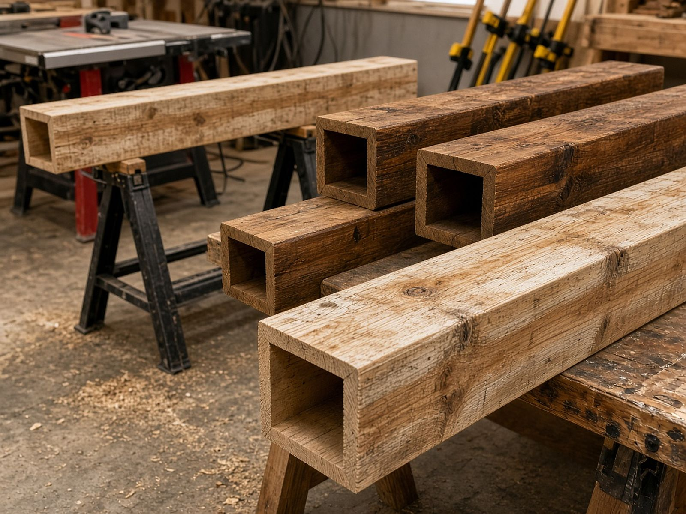
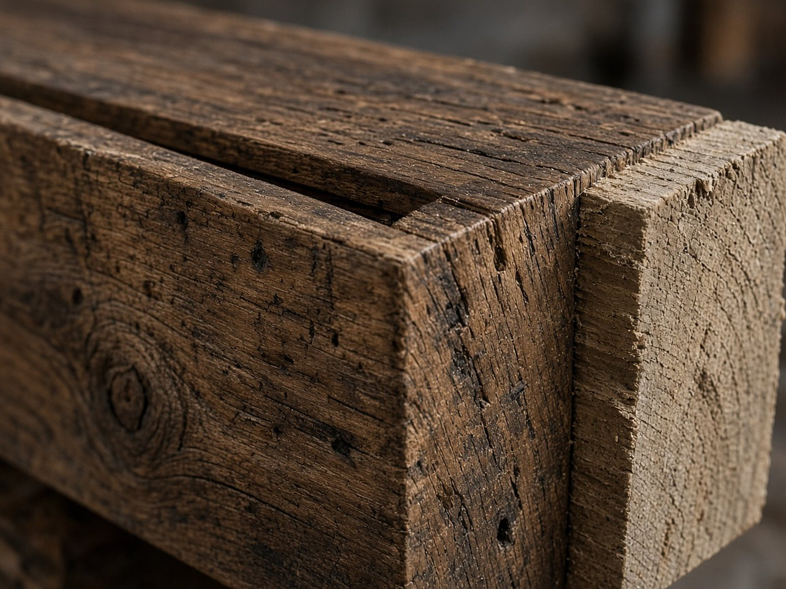

Build schedule
Where Box Beams Fit in Your Build Schedule
For home builders, GCs and contractors placing decorative box beams in a residential sequence. Measuring is in the takeoff guide. Sizes are in the sizing guide. What to confirm with the homeowner is in the selections guide. The finish is in the finish guide. The order is in the how to order guide.
This page is general trade-sequencing advice. It is not a stamped specification or a stamped install instruction. These beams are decorative and non-structural. They wrap or hang below framing for appearance and are not load-bearing members. Follow your own framing, local code, and the job's details. Wholesale Builder Beam is trade only. We sell to home builders, general contractors and remodelers.
On this page: Measure · Order · Receive · Store · Finish and install · Protect

-
Measure after the ceiling layout is set
Measure after framing and the ceiling layout are set. The beam is the finished look below that framing. It does not replace the framing.
Measure each run end to end along the finished ceiling line. Note walls, soffits or breaks so pieces can be cut or butted on site. How to count the runs and figure the linear feet is in the takeoff guide.
Confirm the height and the width against the plan. Height and width are each 4, 6, 8, 10 or 12 inches. Larger than 12 inches is quoted on request. Note that size on the order. The size list is in the sizing guide.
If a beam covers an existing beam line, measure that line and choose a listed height and width that will cover it. How to plan that is in the wrap guide.
Each piece can be up to 24 feet. A run longer than 24 feet is more than one piece. Break that run into pieces of 24 feet or less. The linear feet stay the length of the run. Whether to add extra linear feet for cuts and fitting is the builder's call.
-
Order once the finish is confirmed
Order once the finish selections are confirmed. Beams are built to the size on the order. They are cut to your lengths, then prestained to the spec on the order or left unfinished.
What to walk through with the homeowner, room by room, is in the selections guide. What to check on the form before you submit is in the order checklist.
Use one line per size or finish. The height, the width, and the finish on the form apply to every length row. A different height, width, or finish is its own line. Put a second size or finish in the notes. Builders can put every length for a job on one order.
Prestained. Choose this when you already know the stain brand, type and color and want beams finished and ready to hang. Stain type examples are oil-based, water-based, gel, semi-transparent or solid, plus the color name or number. The beams are finished to that spec.
Unfinished. Choose this when the painter or finisher will match the house on site. Unfinished beams ship raw.
How to choose and enter the stain is in the finish guide.
Put any deadline in the notes box on the order form. The ship or pickup date is confirmed with the order confirmation. How the form runs is in the how to order guide.
-
Coordinate delivery, then receive
Coordinate delivery with the site. The order names a delivery address and ZIP, or pickup. Choose freight, local delivery, or pickup. Ask for a liftgate, or check the liftgate box, if the jobsite has no dock or forklift. How an order ships is in the delivery guide.
Have someone who can receive the crate, and a place to set it that is out of the way of other trades still working.
When the beams arrive, inspect the shipment. Match the pieces to the lengths on the order and to the order confirmation. If the crate is damaged or a piece does not match the order, note it with the driver and email wholesalebuilderbeam@agentmail.to with the order details. What to check is in the receiving guide.

Box beams strapped on a pallet at a residential jobsite. Match pieces like these to the lengths on the order, then keep the stack clear of other trades. -
Store the beams until they go up
Store the beams until install. Prestained beams arrive finished and ready to hang, so protect the finished faces while pieces are carried and stacked.
Keep the stack out of the path of other trades. Do not set finished faces where later work in that room will rub, stack, or lean against them.
Unfinished beams ship raw, as reclaimed-look texture. They stay unfinished until the painter or finisher matches the house on site. Store them the same way so the faces stay clean for that finish.
-
Finish, then install after drywall and paint
The finish and the hang are not the same step.
Prestained beams are finished to the stain brand, type and color on the order before they ship. They arrive finished and ready to hang.
Unfinished beams stay unfinished until the painter or finisher matches the house on site. That on-site finish is the painter's or finisher's work. Sequence it with the rest of the finish on that job.

A stained reclaimed-look face and the open top. The shell fits over a cleat or blocking. This photo is not a color chip. On a typical residential sequence, install the beams after drywall and after the ceiling paint, so those trades are not working against the beams.
The beam is open on top so it fits over a wood cleat or blocking fastened to the ceiling or beam line. The hollow shell hides the cleat once the beam is set and fastened from the sides or top returns. Where a run is longer than one piece, or a wall, soffit or break splits the line, cut or butt the pieces on site so they meet cleanly.
Follow your own framing, local code, and the job's details. This overview does not set fastener size or spacing. Receiving, mounting, cuts and finish care are in the install guide.
-
Protect finished beams from other trades
After the beams are up, they are still decorative and non-structural. Protect the finished faces from other trades still on the job.
That care starts earlier, while pieces are carried, stacked, stored, cut and lifted into place. It continues after they are hung, while later work goes on around them.
Prestained faces are already finished when they arrive. Unfinished beams need the same protection once the painter or finisher has matched the house on site.
Questions go to wholesalebuilderbeam@agentmail.to.
See the takeoff guide for linear feet, the sizing guide for sizes, the selections guide for the homeowner sign-off, the finish guide for stain, the how to order guide for the form, the order checklist for what to confirm before you submit, the delivery guide for freight, local delivery or pickup, the receiving guide for the crate, or the install guide for mounting.
Schedule
Build schedule questions, answered.
When should I measure for box beams?
Measure after framing and the ceiling layout are set. Measure each run end to end along the finished ceiling line, then confirm the height, the width, and the piece lengths against the plan. Note walls, soffits or breaks so pieces can be cut or butted on site. Each piece can be up to 24 feet. A run longer than 24 feet is more than one piece.
When should I place the box beam order?
Order once the finish selections are confirmed. Beams are built to the size on the order. They are cut to your lengths, then prestained to the spec on the order or left unfinished. Choose prestained when the stain brand, type and color are known. Choose unfinished when the painter or finisher will match the house on site. Put any deadline in the notes box. The ship or pickup date is confirmed with the order confirmation.
When should box beams be installed?
On a typical residential sequence, install decorative box beams after drywall and after the ceiling paint, so those trades are not working against the beams. The beam is open on top and fits over a wood cleat or blocking. Unfinished beams stay unfinished until the painter or finisher matches the house on site. These beams are decorative and non-structural. Follow your own framing, local code, and the job's details.
How do I protect finished beams from other trades?
Prestained beams arrive finished and ready to hang, so protect the finished faces while pieces are carried, stacked, stored, cut and lifted, and after they are up. Keep stored beams out of the path of other trades. After install, keep later trades off the finished faces. Unfinished beams stay unfinished until the painter or finisher matches the house on site, and those faces need the same protection once they are finished.